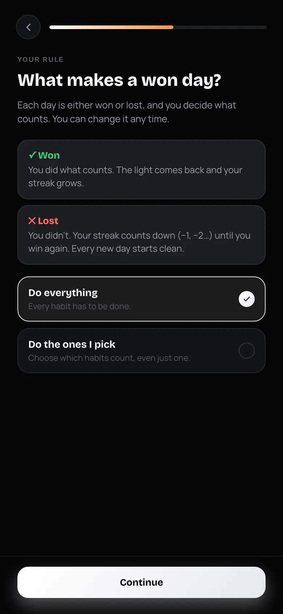
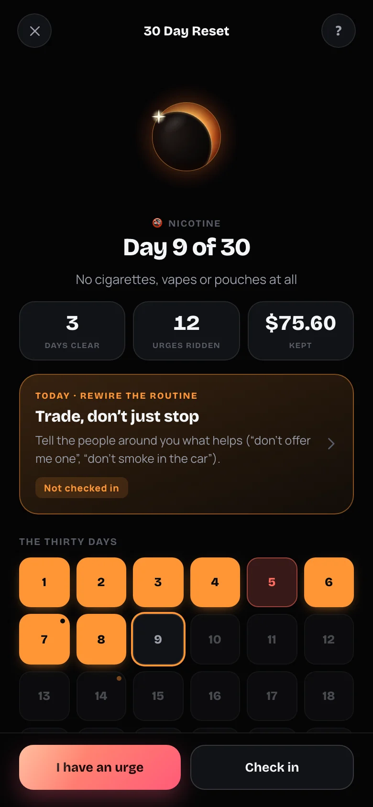
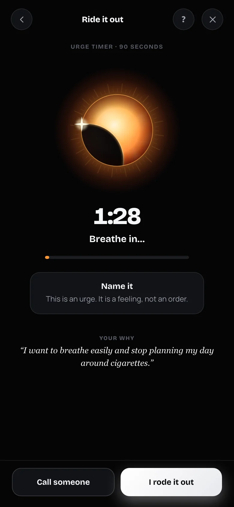

Win the day.
Then win tomorrow.
The habit tracker that tells you the truth. You choose what counts as a won day. Miss it and your streak counts down. Check in and you start fresh. It's honest, and it feels good to show up.
No account. No sign-up. Your data stays on your phone.
Three steps. One minute a day.
NewLife is built around one simple loop: do what you set out to do, then close out the day. The sun on your screen shows how you're doing at a glance.
Pick your habits
Start with up to three. Keep the names short, like Gym, Read or Water. You can add more later.
Choose what wins a day
Do everything, do only the habits you pick, or stay clear of something you are trying to quit. It is your rule, and you can change it.
Check in
Tap your habits through the day. Win the day and the light comes back. At night, a short check-in closes it out and sets up tomorrow.

Your streak can go negative.
Most habit apps quietly reset a missed streak to zero, and you never see what slipped. NewLife counts it: −1, −2, −3, in red, right where you'll see it.
Then you check in and start fresh. No guilt trips, no lectures, just a clear picture of where you stand today. Every habit has its own streak and a plain status line, so you always know what needs you.


You decide what wins a day.
Every day is either won or lost, and you choose what counts. Win the day and the light comes back. Miss it and your streak counts down until you win again. Every new day starts clean.
You can change the rule whenever you like. Days you already played keep the rule they were played under, so your history never gets rewritten.
Every habit has to be done.
Best if you keep a short, steady list and want a clear bar.Only the habits you mark count. The rest are a bonus.
Even one habit is enough. Great for one keystone habit, like a workout.Don't slip on the thing you are quitting. Your 30 Day Reset check-in decides the day.
Available while a break-a-habit 30 Day Reset is running.
Close out the day, on purpose.
At the end of the day, take a minute. Pick the face that fits, note what got in the way if the day slipped, and write a line if you like. Then set one thing for tomorrow.
It never decides whether you won. It is just a calm, private way to finish the day. Your check-ins collect in the Journey tab, so you can look back and see how your days really felt.


A guided month to build a habit or break one.
Pick something you want to start or stop. For thirty days, NewLife gives you one short lesson, one small move and one honest check-in, plus a tool for the hard moments.
- A lesson a day. Short and plain, drawn from published research on how habits form.
- One concrete move. Thirty specific things to do for your habit, not generic advice.
- An urge timer. A 90-second breathing exercise for when it gets hard. It is always free to reach, even before you subscribe.
- Slips handled kindly. A slip resets your days clear but keeps your total and what you've saved.
Habits aren't about willpower.
The ideas behind NewLife come from published studies on how habits actually form. We show where each number comes from.
Much of your day is habit
In a diary study, roughly four in ten of the things people did were repeated almost daily, in the same place, without much thought.
Wood, Quinn & Kashy (2002), Journal of Personality and Social PsychologyAbout two months, and one slip barely counts
In a study of 96 people, the typical time for a daily habit to feel automatic was 66 days. Missing a single day didn't materially change the process.
Lally, van Jaarsveld, Potts & Wardle (2010), European Journal of Social Psychology. The range was 18 to 254 days.A plan beats good intentions
Researchers combined 94 tests of deciding exactly when and where you'll act. People with a plan were more likely to follow through.
Gollwitzer & Sheeran (2006), Advances in Experimental Social PsychologyWhat you can see, you keep doing
Across 138 experiments with almost 20,000 people, those who tracked their progress were more likely to reach their goals.
Harkin et al. (2016), Psychological BulletinThese studies describe people in general, and results vary from person to person. NewLife is a self-improvement tool, not medical advice or treatment.
Habits that feel like something.
Cherry Blossom, Forest and Winter come alive with falling petals, fireflies and snow, alongside the calm Night and Day themes. The sun, the streak flame and the whole app change with the theme you pick.

Cherry Blossom
Petals on the breeze

Forest
Fireflies at night

Winter
A quiet snowfall


Every unlock gets a moment.
Seventeen achievements, from setting up your first three habits to a hundred-day win streak. Each one pops with a little celebration when you earn it.
The Journey tab keeps it short: your streak, how often you keep each habit, your recent check-ins and the calendar, with deeper stats a tap away.
On your Home Screen, not in your way.
Four widgets, including one for the Lock Screen: your streak, today's habits, today's light and your 30 Day Reset. See where you stand every time you unlock your phone, without opening anything.
Optional reminders for each habit, plus a nudge if you haven't checked in by the end of the day.
Your habits are yours.
NewLife makes no network requests. There is nothing to sign into, nothing to sync and nothing for us to see.
No account
Open it and start. No email, no password, no sign-up screen.
Works offline
Everything runs on your phone. No internet needed, ever.
Stays on your phone
Your habits and check-ins are stored on your device. A code or Face ID can lock the journal.
Simple, and everything included.
One subscription unlocks the whole app. No ads, and no data sold, because there is no data.
Annual
About $2.50 a month. Free for the first 3 days, then renews yearly until you cancel.
Monthly
Pay month to month and cancel any time.
Planned launch pricing. Final prices and trial terms are shown in the App Store before you subscribe. Manage or cancel any time in your Apple ID settings.
Questions about NewLife.
How much does NewLife cost?
NewLife is a subscription app: planned launch pricing is $29.99 a year with a 3-day free trial, or $6.99 a month. Final prices and trial terms are shown in the App Store before you subscribe, and you can cancel any time in your Apple ID settings.
Do I need an account?
No. There is no sign-up. NewLife works as soon as you open it.
Where is my data stored?
On your iPhone. NewLife does not send your habits or journal anywhere. Because of that, deleting the app deletes your data, and syncing between devices is not available yet.
What makes a won day?
You choose. Do everything: every habit has to be done. Do the ones I pick: only the habits you mark count, and the rest are a bonus. Or stay clear: your check-in on a 30 Day Reset to break a habit decides the day. You can change it any time in Settings.
What happens to my history if I change the rule?
Nothing. A new rule starts today. Days you already played keep the rule they were played under, so past wins and losses stay as they were.
What happens when I miss a habit?
Your streak goes negative and counts down for each missed day (−1, −2, −3…). Check in and it starts fresh. Nothing is hidden and nothing is judged.
What is the 30 Day Reset?
An optional program to build a habit or break one: a short lesson and a small move each day, a daily check-in, and an urge timer when it gets hard. It is a self-guided plan, not medical advice or treatment. If you are struggling, please reach out to a professional or a helpline. Read more.
What is the check-in?
A short flow at the end of the day: how the day felt, what got in the way if it slipped, a line for your journal, and one thing for tomorrow. It never decides whether you won the day.
Is the journal encrypted?
The journal is protected by a lock code and optional Face ID or Touch ID, and it only exists on your phone. It works like a privacy screen for anyone who picks up your phone.
Will there be ads?
No. NewLife has no ads and makes no network requests.
Does it work on Android or iPad?
NewLife is made for iPhone. Other platforms may come later.
How do the widgets work?
Press and hold your Home Screen, tap +, search for NewLife and add the streak, today's habits, today's light or 30 Day Reset widget. Open the app once and they will fill in.
Start with today.
Win the day. Then win tomorrow.